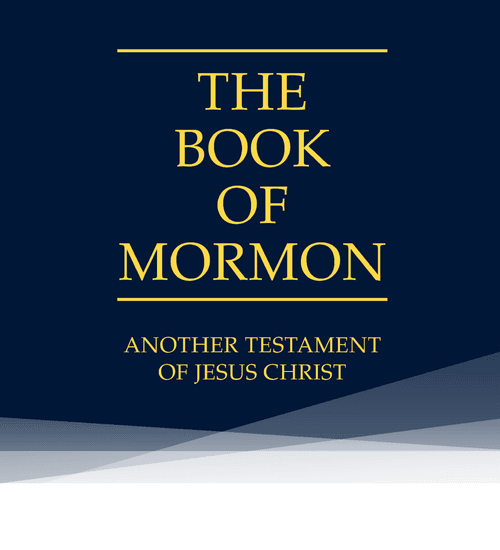
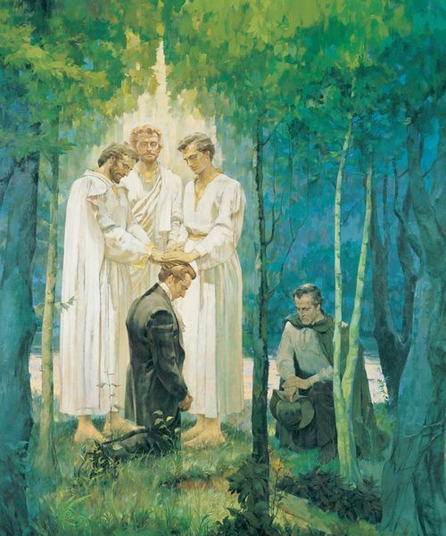
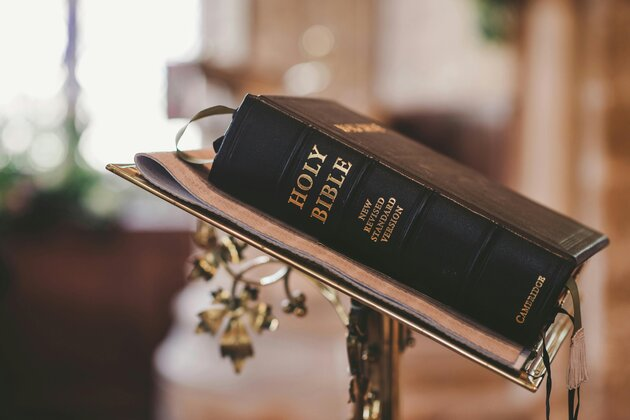

The Restoration
Most members of the Church of Jesus Christ of Latter-Day Saints would say the apostasy was brought about because of the lack of priesthood holders. Such a statement isn't true and can't be proven. John the Revelator and the Tree Nephites were still living priesthood holders and their whereabouts were unknown during the Great Apostasy. Even if all of Jesus' original Apostles were killed, Acts 1 states that Matthias was ordained to fill the gap left by Judas so they could call and ordain replacements.
One of the easiest ways to prove an apostasy is through sola scriptura. It's the doctrine that closes the door on further revelation by asserting that the Bible is the complete word of God. There is a fallacy in the argument given that sola scriptura can't be proven using only scripture. Someone has to bring in outside sources or interpret specific parts of a text a certain way without objective support for that interpretation. People rejecting further revelation is how one could demonstrate that an apostasy has occured.
Regarding evidences of the Book of Mormon we have three men who claimed to have seen a light and heard a voice stating that the translation of the gold plates was correct. These men didn't deny their witness even after they had fallen out with Joseph Smith when such denial would have been very much merited had the whole thing been a hoax. This story also bears striking resemblance to Paul from the New Testament who also saw a light and heard a voice. With this in mind why accept one and reject the other. To do so would be to apply separate standards to similar things which isn't the most logical thing to do.
